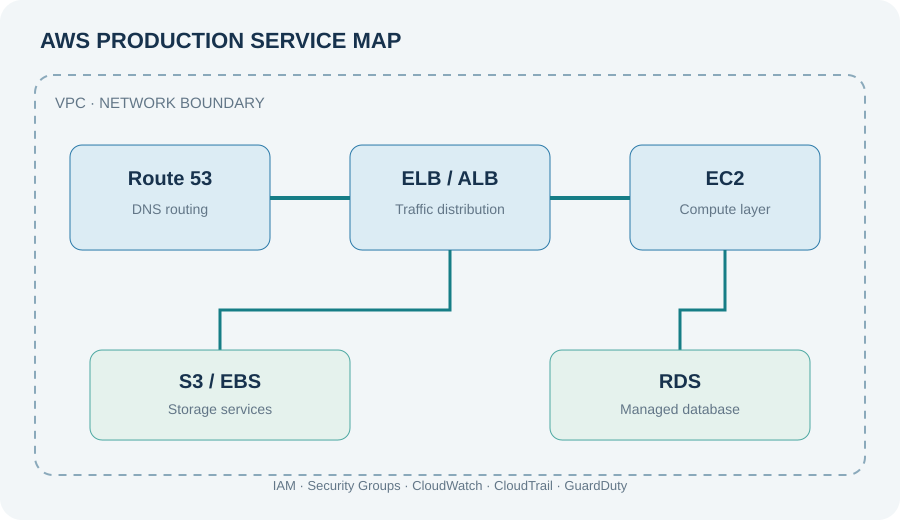
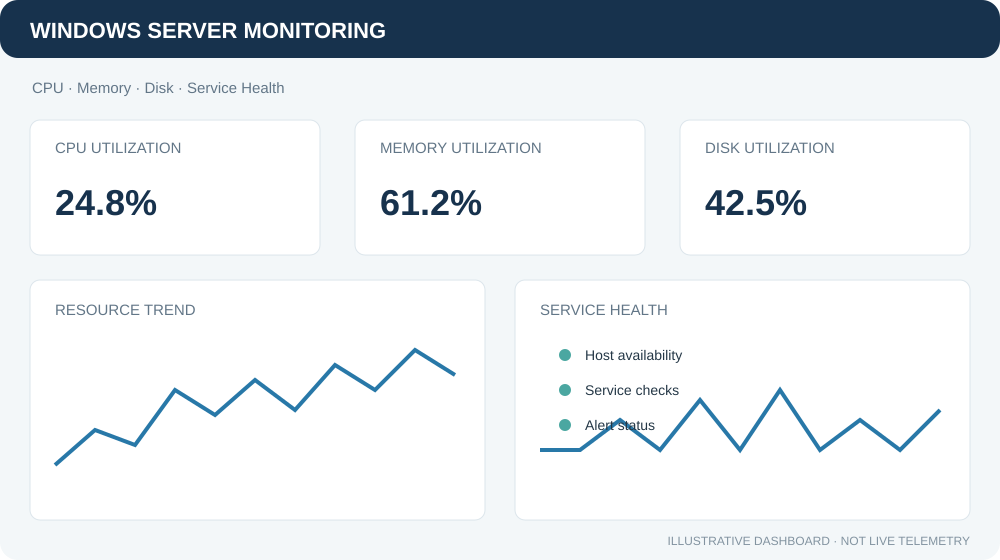
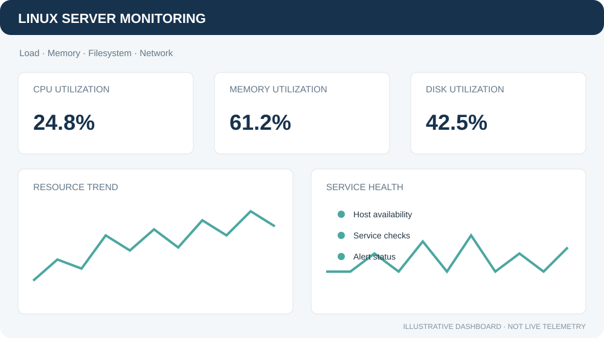
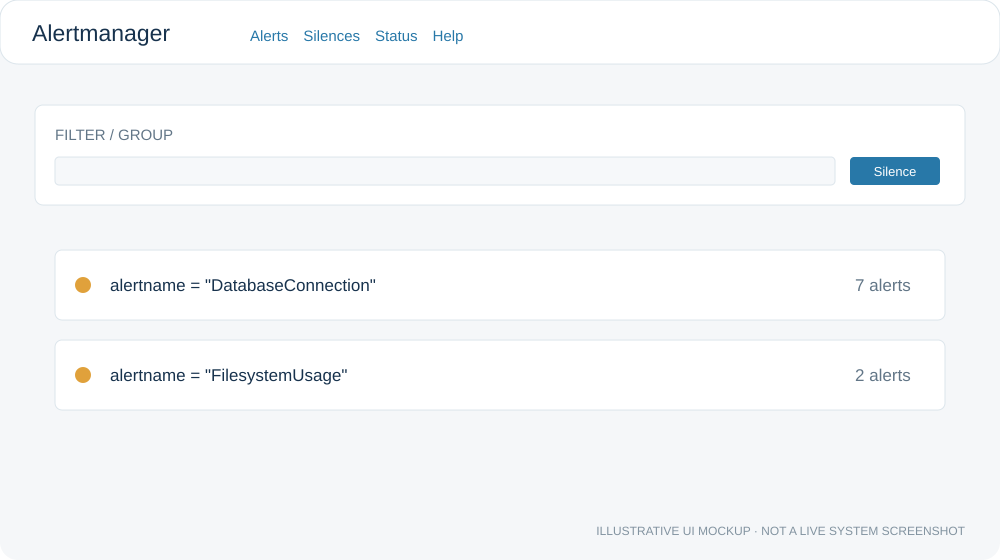
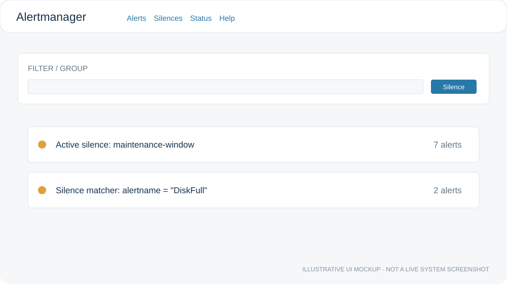

AWS Administration
Production resource provisioning, configuration, monitoring and troubleshooting.
SYSTEMS ADMINISTRATION · AWS · INFRASTRUCTURE OPERATIONS
I work across AWS cloud infrastructure, Windows and Linux systems, enterprise services, monitoring, backup and recovery — with a focus on practical operations and dependable service delivery.

CAPABILITIES
A practical systems and infrastructure skill set spanning cloud services, enterprise platforms and operational tooling.
Production resource provisioning, configuration, monitoring and troubleshooting.
Independent administration across multiple Windows Server versions and core enterprise services.
Installation, configuration, routine maintenance, physical and logical backup, restore and validation.
CDN configuration, cache and origin settings, web security, domain and certificate lifecycle operations.
Backup administration, restore execution and recovery validation across on-premises and AWS resources.
Infrastructure automation, CI/CD, dashboards, alerting and operational scripting.
SELECTED WORK
Selected examples of operational work and technical implementation. Production experience is distinguished from configuration demonstrations.
More than three years of hands-on responsibility for production AWS environments, independently handling resource deployment, configuration, monitoring and incident troubleshooting.
Independent administration of enterprise Windows Server environments across multiple versions.
SQL Server installation, configuration and routine maintenance, with practical physical and logical backup and recovery work.
Advanced query tuning is not presented as a standalone specialty.
Hands-on configuration and maintenance across content delivery, web security and domain services.
Backup and recovery operations across Windows infrastructure and AWS resources.
 BACKUP AND RESTORE VALIDATION LIFECYCLE
BACKUP AND RESTORE VALIDATION LIFECYCLEMixed Windows/Linux and Kubernetes monitoring, operational alerting and delivery automation.
 MONITORING AND ALERT ROUTING FLOW
MONITORING AND ALERT ROUTING FLOWLong-term production Linux operations, service health checks, resource analysis, network troubleshooting and cross-team incident resolution.




Dashboard and alert visuals on this page are explanatory illustrations, not original production screenshots or live telemetry. Production evidence screenshots will be added only after their image files are uploaded to the repository.
HOW I WORK
A consistent approach to service incidents: understand impact, gather evidence, restore safely and prevent recurrence.
Review alerts, service health and user-reported symptoms.
Assess severity, impact, affected systems and urgency.
Correlate logs, metrics, system state and network paths.
Apply safe remediation or escalate with evidence.
Confirm recovery and monitor for recurrence.
Record root cause, corrective action and follow-up.
BACKGROUND
Six years of IT infrastructure and operations experience across cloud, Windows and Linux systems, enterprise services, monitoring, backup and customer technical support.
Comfortable working independently on day-to-day operations and coordinating with specialist teams when issues require deeper product or platform involvement.
GET IN TOUCH
For Systems Administration, AWS and infrastructure operations opportunities.